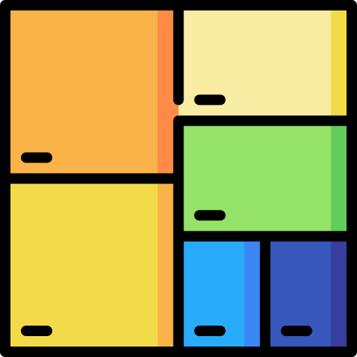

Cyrus Chung's Website
3rd Year Applied Statistics Major, Computer Science and
Mathematical Sciences Minor at the University of Toronto
About Me
Hi, my name is Cyrus Chung, and I am a student at the University of Toronto entering my third year,
majoring in statistics and minoring in computer science and mathematics. I am a passionate and
motivated student looking to get experience in the software development industry, and I am working
hard every day to reach my goals. Throughout the years I have worked various jobs and started projects
that have helped me improve my skills not only as a student and developer, but also a person.
More about myself, I enjoy playing basketball, listening to music, and weightlifting.

Projects
The simulation consists of four key entities: Riders, drivers, the dispatcher, and the monitor. Riders request rides from their current location to a destination. Drivers drive to pick up and drop off riders. The dispatcher receives and satisfies requests from drivers for a rider, and from riders for a driver. The monitor keeps track of activities in the simulation, and when asked, generates a report of what happened during the simulation.

This is an interactive treemap visualization tool featuring a general API, and specific subclasses that visualize two different kinds of data: the files and folders in your computer, and a set of research papers. This visualizer helps display the order in which subtrees are shown matters when modelling files, but not when modelling research paper data. You can also manipulate with the visualizer, by being able to collapse and expand files, and change the current folder being viewed.
A simple version of mark-and-sweep implemented in C to clean up dynamically allocated memory.
A text-based simulation of the famous board game Othello, created in Java. Allows the user to play against a friend, or against various computers that employs different tactics.